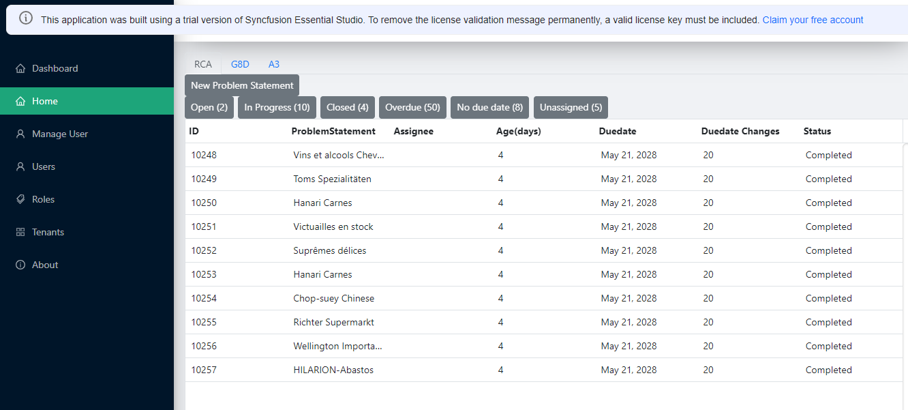
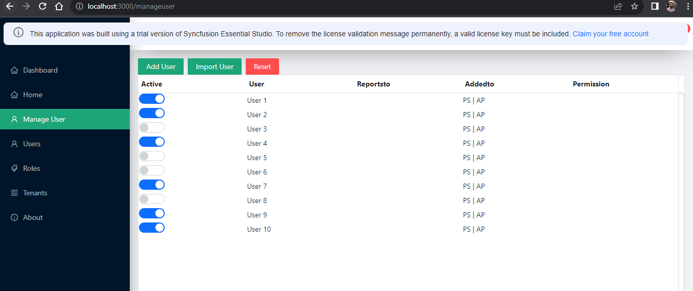
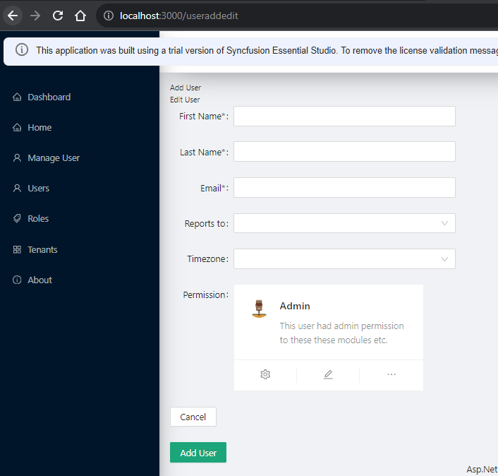

Current boilerplate template I have downloaded from this link boilerplate is with .Net as backend and ReactJS as front-end technology.
This boilerplate code ReactJS project comes with Ant design. Ant Design It uses AntDesign UI component for menu, layout, forms all the things we seen in demo.
Now I have integrated syncfusion controls into this project, its works fine, I have forcefully installed the required packages and now grid,forms and other components works fine in this demo. But problem is the design. See below screenshots
  So my question is, do I have to rewrite everything given by boilerplate front-end project to use syncfusion theme/layout/menu etc. Or I can integrate both (ant design and syncfusion controls) without affecting eachother. Current layout/menu/theme is from ant design.
Syncfusion provide lot of customization to use theme/structure of bootstrap4/bootstrap5/material design etc. But not in ant design structure.
Ant design also have all the component we required. forms/tabs/buttons etc which is also customizable.